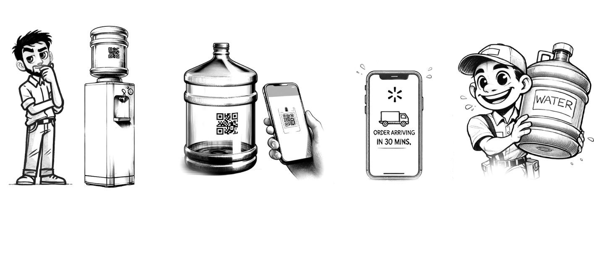

In the United States, clean drinking water is essential, yet many struggle with the inefficiencies of existing water delivery services. Imagine this: It’s summer and 92F outside, and you reach for your water container - but its empty. Frustrated right, you remember how slow and complex it can be to order a refill. What if this process was as simple as scanning a QR code?
The Challenge
For millions of Americans, ordering water is not quick as it should be. Services lack convenience, and delays often make it harder for families and individuals to access clean drinking water. Bottled water is one of the largest markets in the U.S., with over 15.9 billion gallons sold annually in 2022. Yet, despite these high volumes, the user experience for water delivery is far from ideal
The Solution
Enter a revolutionary approach: A water app that works seamlessly with QR code labels on water containers. The idea is simple--
This concept addressed a key frustration: When you’re out of water, the last thing you need is more delay. The instant QR activation eliminates waiting time and streamlines the process, ensuring that clean water is just a few taps away.
The Research Journey
I dove deep into understanding water delivery challenges. Through informal surveys and interviews, I discovered a key insight: Most users reluctant to download new apps for every service. They want quick, simple interactions. This led us to focus on QR code technology -- a solution that users could activate without the need to install anything new.
User Personas
What Makes This Different?
Why is this approach better? For starter, it eliminates the usual hassle. With just a scan, user can: